商品属性商品本身的可见属性与购买基础决策点。
适用季节p0标签值：春夏薄款 / 夏季速干 / 秋冬保暖 / 四季通勤判断：商品厚薄、场景和季节字幕。
功能属性p0标签值：速干透气 / 凉感 / 弹力 / 抗皱 / 耐磨 / 保暖 / 宽松显瘦判断：面料/动作实测和字幕功能词。
材质属性p0标签值：纯棉 / 亚麻 / 冰丝 / 聚酯纤维 / 牛仔 / 羊毛 / 锦纶判断：面料特写与口播材质词。
功能、版型与通勤场景表达 · 标签树、效果分析与 Top 素材逐帧创意拆解。
内容形式、画面客观要素使用统一核心标签；商品属性、卖点表达、情绪营销已按 男装 的实际类目与素材特点调整枚举值。
视频结构、出镜角色、拍摄场景为核心标签，使用更深的蓝色卡片强调。
| 标签 | 消耗占比 | CTR | 3秒完播 | CVR |
|---|---|---|---|---|
| 真人口播 | 92.8% | 2.51% | 36.8% | 5.03% |
| 多人剧情 | 5.6% | 1.15% | 33.7% | 2.29% |
| 沉浸式产品展示 | 1.5% | 1.44% | 31.9% | 5.15% |
| 直播切片 | — | — | — | — |
| AI数字人口播 | — | — | — | — |
| 标签 | 消耗占比 | CTR | 3秒完播 | CVR |
|---|---|---|---|---|
| 单人女 | 80.2% | 2.5% | 35.5% | 4.99% |
| 单人男 | 12.6% | 2.59% | 45.2% | 5.29% |
| 多人对话 | 5.6% | 1.15% | 33.7% | 2.29% |
| 无人出镜 | 1.5% | 1.44% | 31.9% | 5.15% |
| 标签 | 消耗占比 | CTR | 3秒完播 | CVR |
|---|---|---|---|---|
| 居家室内 | 83.0% | 2.49% | 35.6% | 4.97% |
| 户外街景 | 11.7% | 2.54% | 41.3% | 5.35% |
| 商场门店 | 3.6% | 1.16% | 38.4% | 2.02% |
| 机场 | 1.7% | 0.9% | 46.2% | 3.41% |
| 标签 | 消耗占比 | CTR | 3秒完播 | CVR |
|---|---|---|---|---|
| 颜值种草 | 67.6% | 2.25% | 36.0% | 4.83% |
| 功能实测 | 31.1% | 2.8% | 37.8% | 5.01% |
| 场景痛点 | 1.3% | 1.92% | 32.5% | 4.26% |
| 标签 | 消耗占比 | CTR | 3秒完播 | CVR |
|---|---|---|---|---|
| 显瘦修饰 | 66.3% | 2.27% | 35.6% | 4.87% |
| 显腿长 | 14.0% | 2.98% | 32.7% | 5.29% |
| 速干透气 | 7.9% | 2.12% | 41.6% | 6.53% |
| 核心卖点展示 | 7.8% | 3.12% | 41.3% | 3.17% |
| 保暖轻量 | 1.4% | 3.04% | 48.0% | 3.88% |
| 省心搭配 | 1.3% | 1.92% | 32.5% | 4.26% |
| 挺括显瘦 | 1.1% | 1.37% | 62.9% | 0.79% |
| 显瘦显高 | 0.2% | 2.51% | 25.6% | 13.73% |
| 标签 | 消耗占比 | CTR | 3秒完播 | CVR |
|---|---|---|---|---|
| 身材焦虑自信种草 | 80.3% | 2.39% | 35.1% | 4.94% |
| 运动挑战 | 7.9% | 2.12% | 41.6% | 6.53% |
| 结果导向 | 7.8% | 3.12% | 41.3% | 3.17% |
| 冬季保暖 | 1.4% | 3.04% | 48.0% | 3.88% |
| 省心决策 | 1.3% | 1.92% | 32.5% | 4.26% |
| 通勤自信 | 1.1% | 1.37% | 62.9% | 0.79% |
| 美女吸睛 | 0.2% | 2.51% | 25.6% | 13.73% |
| # | 细分类目 | 素材数 | 消耗占比 | CTR | 3秒完播 | CVR |
|---|---|---|---|---|---|---|
| 1 | 上衣 | 297 | 66.3% | 2.27% | 35.6% | 4.87% |
| 2 | 裤子 | 81 | 14.0% | 2.98% | 32.7% | 5.29% |
| 3 | 速干衣裤 | 26 | 7.9% | 2.12% | 41.6% | 6.53% |
| 4 | 羽绒服/棉服 | 7 | 1.4% | 3.04% | 48.0% | 3.88% |
| 5 | 套装/学生校服/工作制服 | 9 | 1.3% | 1.92% | 32.5% | 4.26% |
| 6 | 衬衫 | 5 | 1.1% | 1.37% | 62.9% | 0.79% |
| 7 | 汉服/民族/舞台/中式服装 | 6 | 1.0% | 1.47% | 37.0% | 2.23% |
| 8 | 冲锋衣裤 | 1 | 0.3% | 2.9% | 38.9% | 4.99% |
| 9 | 战术靴/飞行靴/沙漠靴 | 2 | 0.3% | 4.19% | 17.2% | 1.52% |
| 10 | 健身/运动服装 | 2 | 0.2% | 2.69% | 18.9% | 6.68% |
按消耗排序；每条均展示视频、6 个关键帧、叙事路径、Learning 与创意标签，布局与箱包鞋靴深度站保持一致。
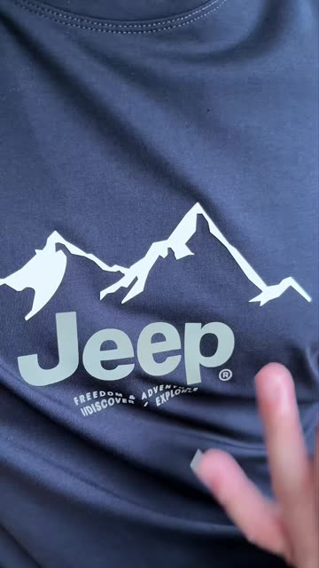
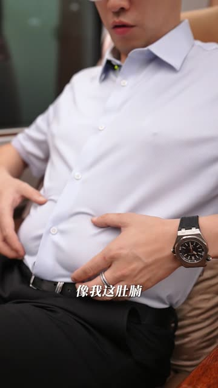
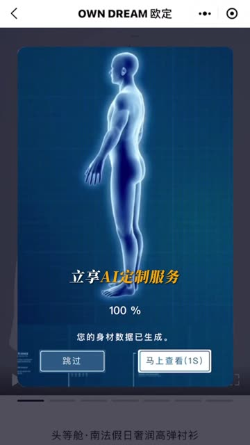
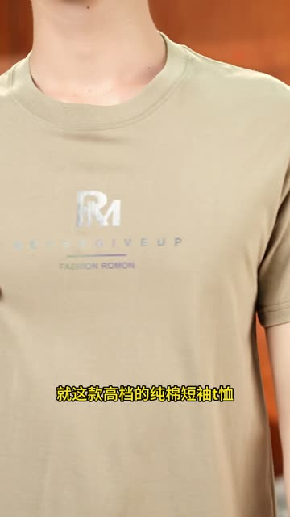
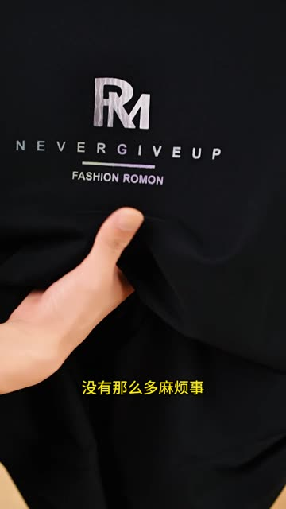
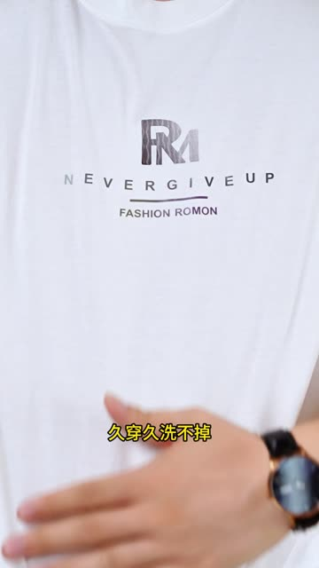
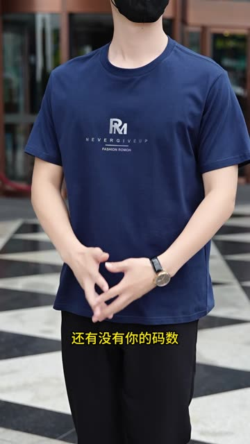
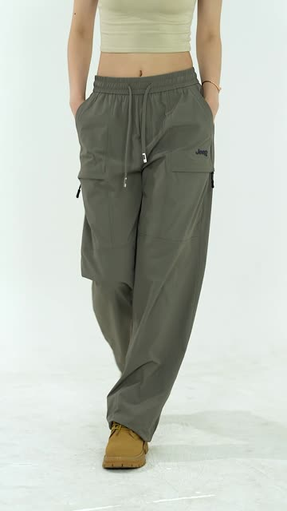
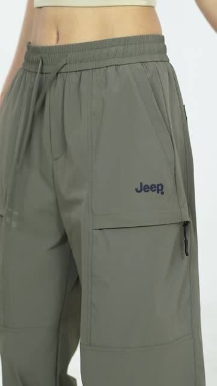
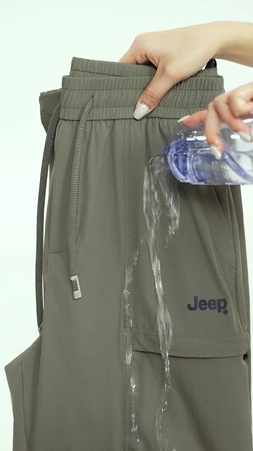
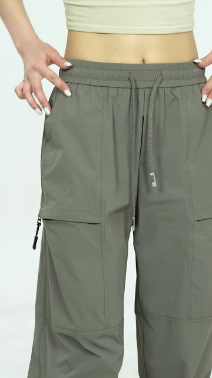
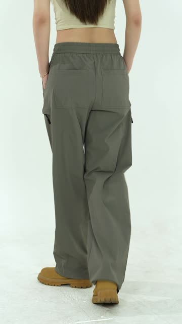
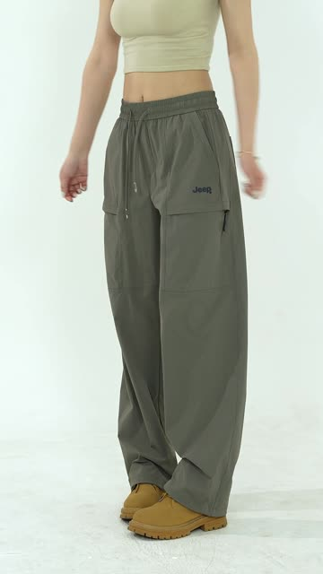
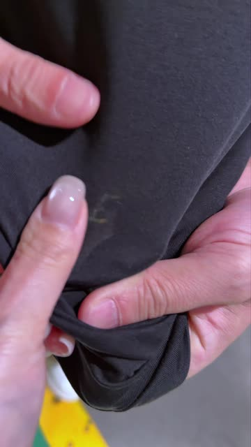
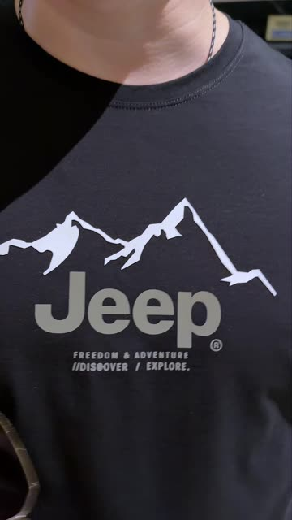
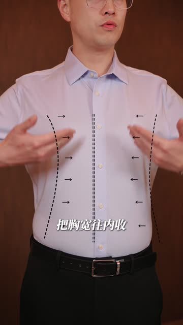
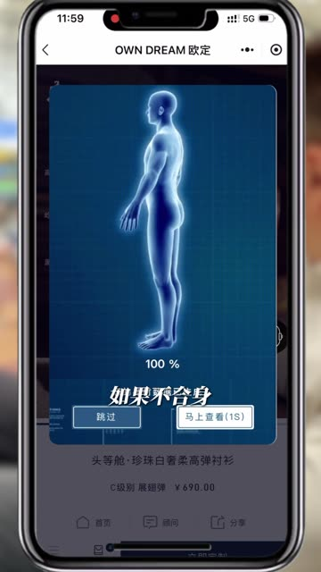
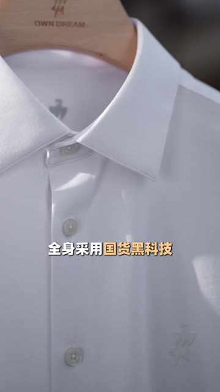
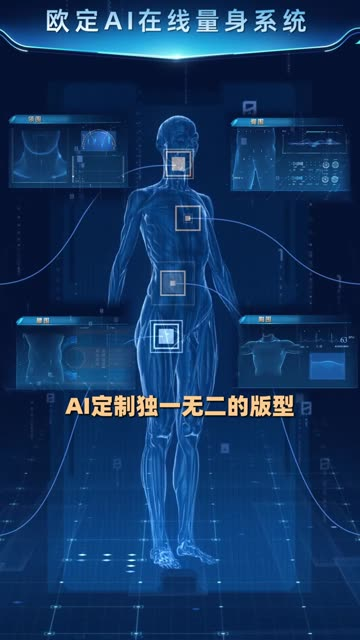
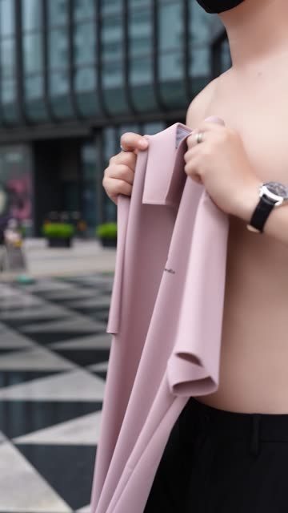
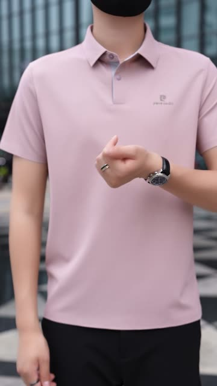
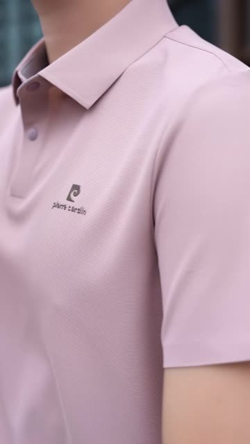
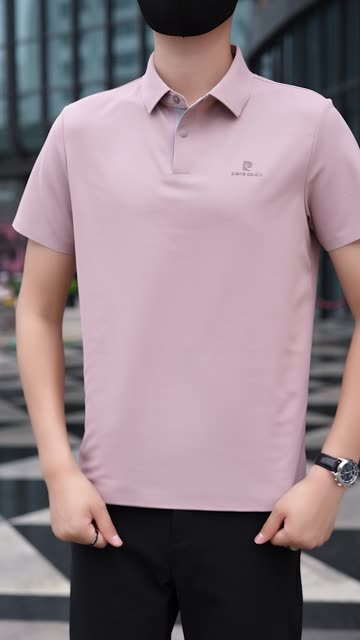
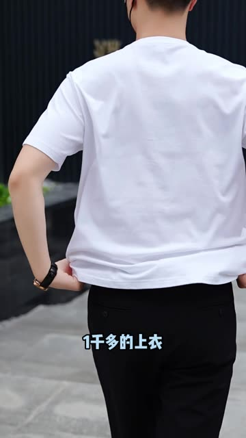
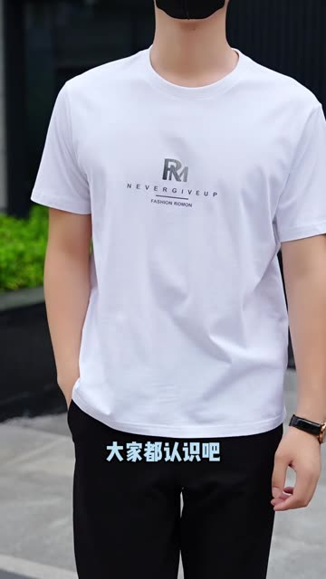
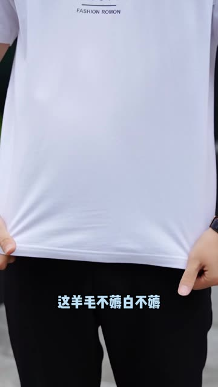
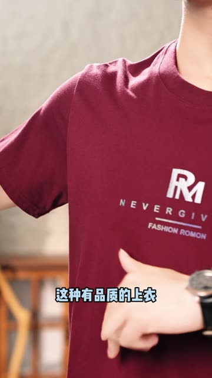
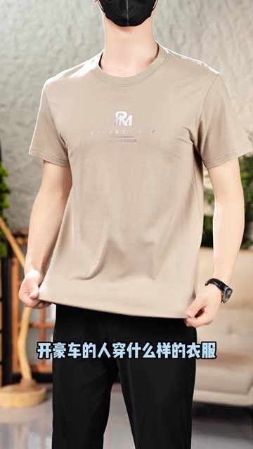
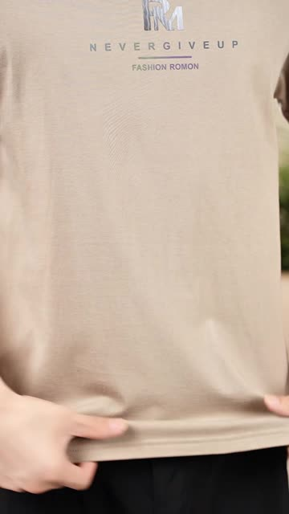